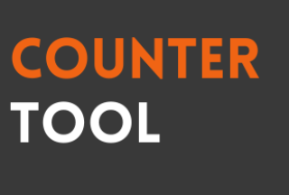
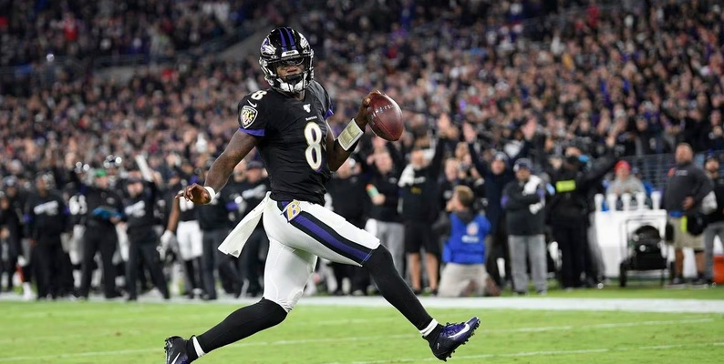

My Projects

Yummerz Recipe: REST APIApp
Yummerz is a REST API built using Springboot 3 following MVC architecture to manage CRUD operations on recipes.
View on GitHub

Overwatch 2 Counterpick ToolWebpage
Built an interactive Overwatch 2 counterpick tool using HTML, CSS, and JavaScript.
View on GitHub

Predicting NFL MVPAI/ML
A web app for tracking volunteer service hours, built with React and Firebase.
View on GitHub